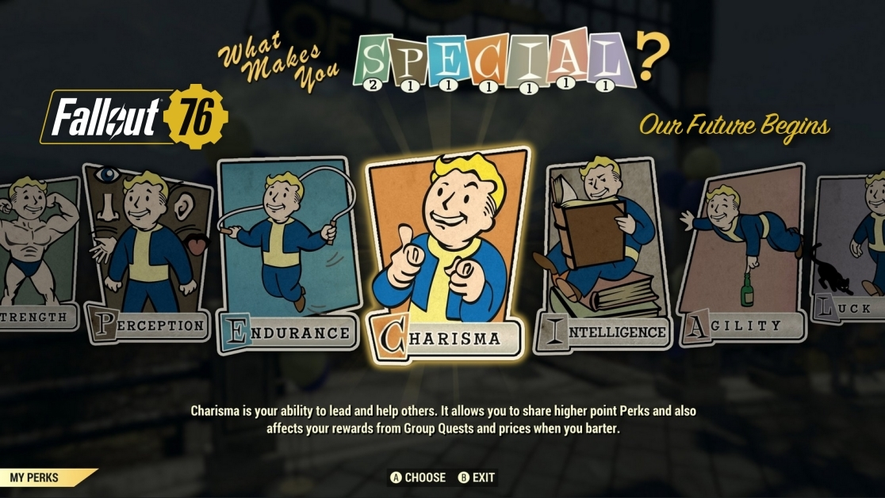

on November 14, 2018 we are getting a new fallout game fallout 76 this will be the fisrt online fallout game and the first to have no mpc they also have changed up the perk system and now it is with card packs. So, how do Fallout 76 Perk Cards work as you level up through the new Fallout game. Every time you level up you will get to put a point towards one of the seven S.P.E.C.I.A.L. attributes, but you will also get to pick a Perk Card to attach to your character all the way up to level 50. You will also be able to unlock Park Card packs that contain four random cards from a list of hundreds, as well as a joke and a stick of gum that temporarily staves off hunger. You’ll get one of these Perk Card packs every two levels up to level ten, and then every five levels up to level 50.
